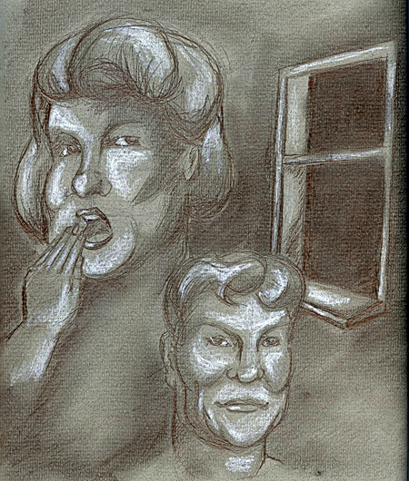

Jester-Knight
Literature
Film
Music
Visual Art
Tributes
Submissions
Links
Contact
Meredith Kahn
Biography
Meredith Kahn earned her Bachelor of Arts degree in English Education from Holy Family College and her Masters of Arts in English from Arcadia University. By day, she works as an editorial assistant in the publications department of a non-profit cancer organization. The remainder of her time is spent perfecting her writing, be it poetry or prose. Much of her work is inspired by landscapes rich in history, so Philadelphia has become the ideal place in which to write.
Click below for Meredith's work
Cries in the Night (.pdf)

Tim Kahn, both the illustrator and the older brother of Meredith Kahn, graduated from the Ringling School of Art and Design in 2000 with a BFA in Illustration. He worked with Disney's Youth Education Series (Disney's YES Program) for two years. Currently, Tim Kahn works as a freelance artist and illustrator. His sister Meredith is his best client, and by far, the proudest. He can be reached at TKahn316@aol.com.